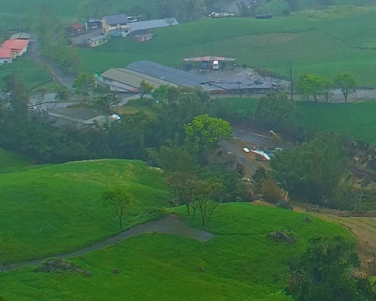

Image Dehazing Projects
ROAS5800 · Choose an assignment to explore its methods and results.
Assignment 1
Three pretrained restoration systems
PGL-Net-T
HNDiff-FocalNet
PixRestore-S
352 RW2AH test pairs
Maximum side 512 pixels
Assignment 2
Spatial, frequency and codebook priors
SFMN
SFHformer
IPC-Dehaze
352 RW2AH test pairs
Original 640 × 512 resolution

Each assignment has a separate comparison interface and evaluation protocol. Saved examples are interactive. New-image GPU inference runs in the local applications.